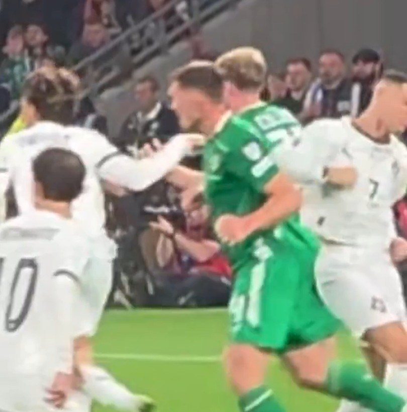

Slap to O'Shea in World Cup Qualifier
Match background: On 1 September 2021, in European qualifying Group A for the 2022 Qatar World Cup, Portugal hosted the Republic of Ireland at the Algarve in Faro. The night should have been Ronaldo's coronation — his 111th goal broke the Iranian legend Ali Daei's all-time men's international scoring record. But the slap in the 15th minute cast a shadow over the celebrations.
The slap: In the first half Portugal won a penalty (Bruno Fernandes fouled by Jeff Hendrick, confirmed by VAR). As Ronaldo stood at the spot preparing to take it, Irish defender Dara O'Shea deliberately kicked the ball away — a time-wasting ploy to disrupt Ronaldo's rhythm and pile on psychological pressure. Ronaldo immediately lost his head and slapped/shoved O'Shea in the face; the 22-year-old Irish youngster went down clutching his face.
Escape from punishment: Incredibly, neither the referee nor VAR punished Ronaldo's slap — no yellow, no red. Under the rules an aggressive gesture should be a straight red. Replays clearly showed Ronaldo's hand made contact with O'Shea's face, and O'Shea's fall was not a dive. Britain's Daily Express ran the headline 'Ronaldo escapes punishment after slapping O'Shea'; the public was appalled.
Ironic reversal: More ironically, Ronaldo's subsequent penalty was saved by Irish keeper Gavin Bazunu — a rare penalty miss in his international career. Irish fans joked it was 'instant karma for the slap'. It was not until the 89th and 96th minutes that Ronaldo headed in twice to complete a 2-1 comeback, breaking the scoring record. The slap was thus buried by the narrative of victory — but the video evidence never disappeared.
Who is O'Shea: Dara O'Shea (born 1999) was not, as some fans misreported, the veteran John O'Shea, but a young centre-back then at West Brom. He did not play up the incident afterwards, but Irish fans and media remembered it for years. He and Ronaldo thereafter developed a 'grudge' — when they met again in a November 2025 qualifier it was O'Shea whom Ronaldo elbowed, drawing Ronaldo's first national-team red — an inevitable closing of a four-year loop.
Broad comparison: Comparable slap gestures in modern football are virtually always red: Suárez was banned 9 matches at the 2014 World Cup for the bite; in 2018 a Colombian was sent off for shoving an opponent's face. Ronaldo's slap came in the VAR era yet was entirely ignored — further proof of systematic preferential officiating of superstars.
Conclusion: A swipe over a penalty-ball — a ridiculous scene for a player of his stature — added to Cristiano's long list of outbursts.